Radio, electrónica y experimentación
Soy José Antonio Castañeda Audiffred, XE3JAC. Soy Licenciado en Informática y Maestro en Migración de Sistemas Computacionales. Mi estación es también un laboratorio donde conviven radiofrecuencia, software, redes, electrónica, microcontroladores y fabricación digital.
Formación
Licenciado en Informática.
Maestro en Migración de Sistemas Computacionales.
Comunidades
Federación Mexicana de Radio Experimentadores
Alfa Delta DX Group — 10AD1986
HamSphere — XE3JAC
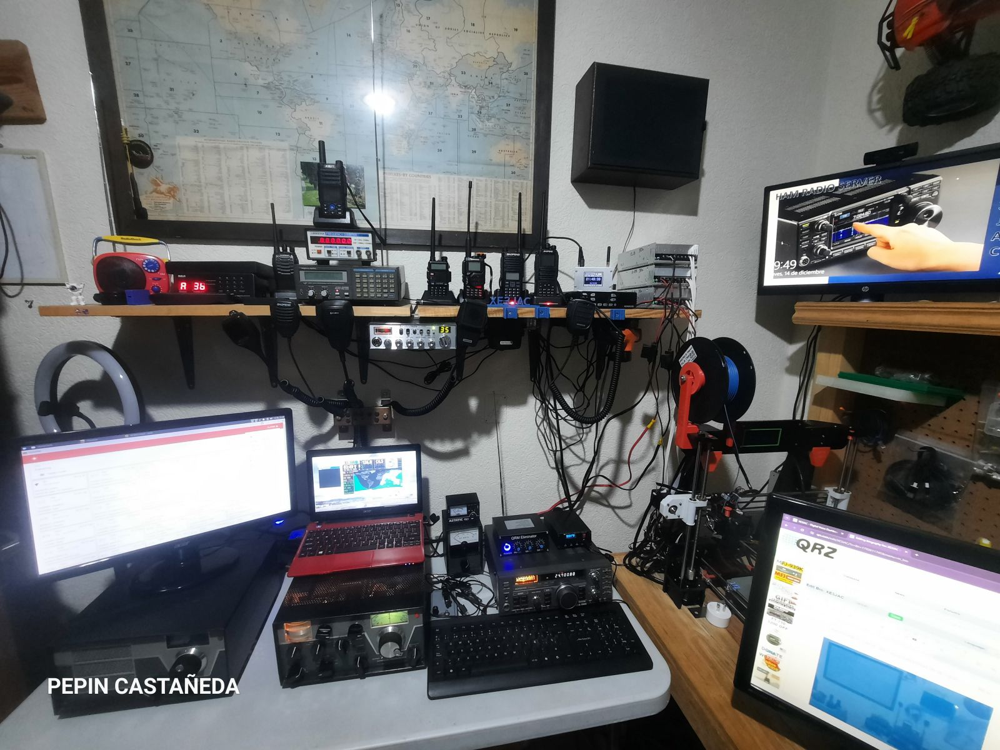
Una estación en constante evolución
El Shack ha ido integrando equipos HF/VHF/UHF, nodos digitales, servidores de radio, receptores SDR, proyectos APRS y herramientas para electrónica e impresión 3D.
Radio Shack XE3JAC — vista general de la estación (2023).
Proyectos y tecnologías
APRS / WX / Indy Open APRS

Proyecto APRS/WX de Indy APRS.
También he aplicado APRS mediante LoRa en 433 MHz y en VHF 144.390 MHz.
DMR · NXDN · EchoLink · AllStarLink
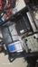
Repetidor UHF para el área de Cuautlancingo, Puebla, con enlaces EchoLink y AllStarLink; relacionado con Radio Pasillo Poblano, proyecto de XE1TTS.
DAPNET
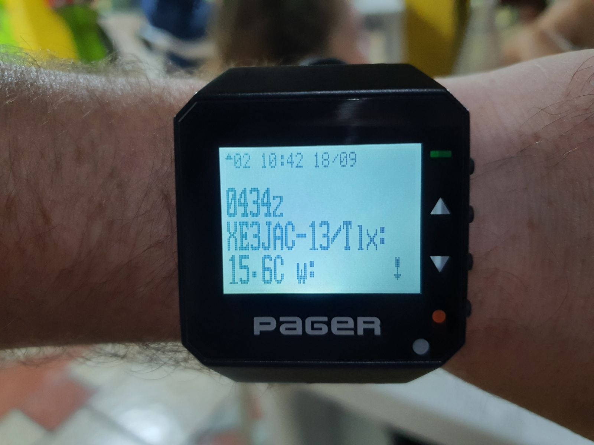
Recepción de mensajes como en los años 80: los famosos “beepers” mediante la red DAPNET.
SDR · TinyGS · OpenWebRX+
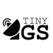
TinyGS — estación XE3JAC para recepción de pequeños satélites.
OpenWebRX+ / RTL-SDR — recepción remota desde Puebla.
Electrónica y restauración
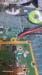
Me gusta la electrónica y restaurar radios; este Kenwood UHF fue preparado para uno de los repetidores.
Impresión 3D
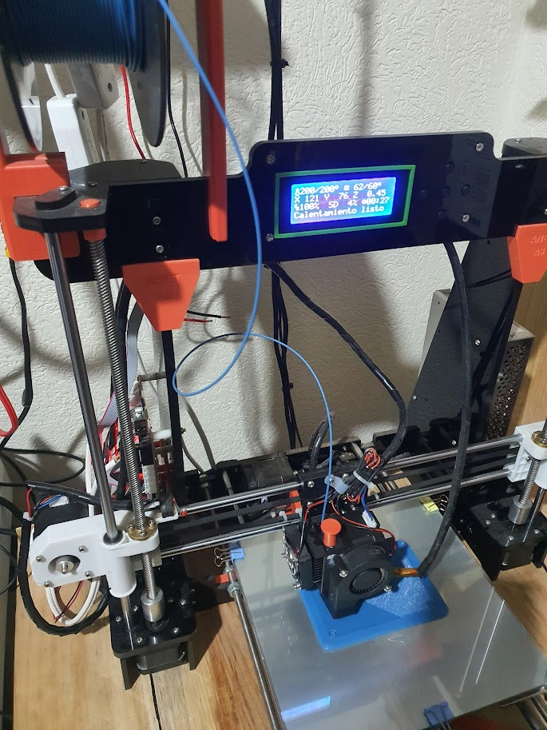
Mi primera impresora 3D, utilizada para imprimir accesorios de radio y muchos otros proyectos.
Drake TR-4C / RV-4C
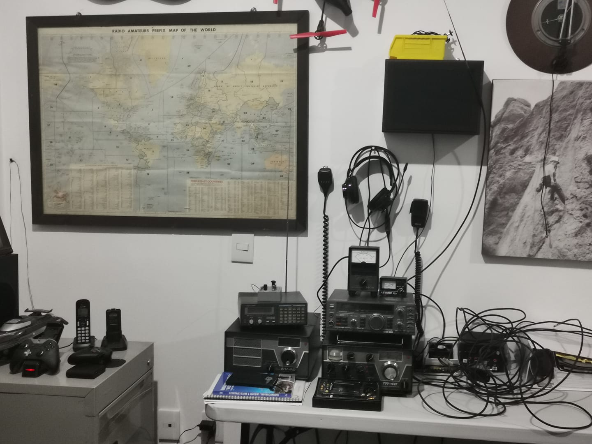
El conjunto Drake TR-4C y RV-4C perteneció a XE3Z — José Antonio Castañeda Melgoza. Hoy forma parte de mi estación y representa una parte importante de la historia familiar dentro de la radioafición.
Galería XE3JAC
Cada fotografía conserva su reseña o contexto original de la biografía de QRZ, adaptado únicamente para mejorar redacción y lectura.
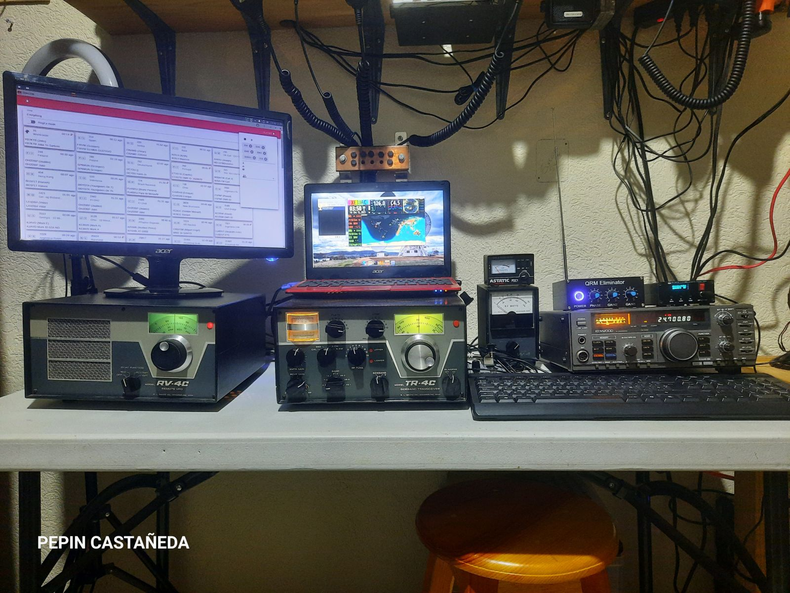
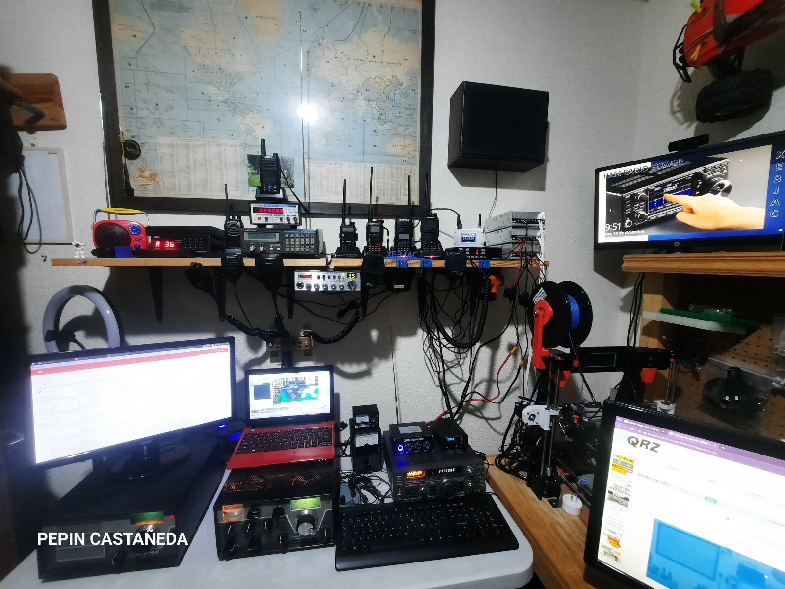
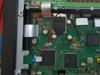
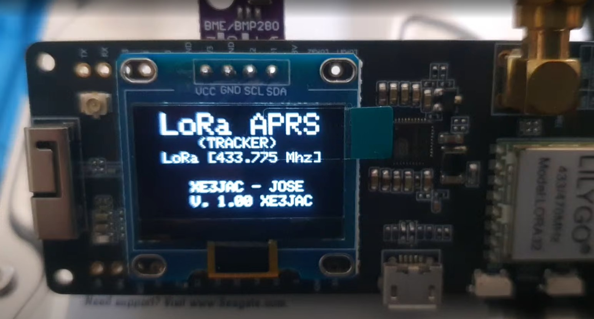
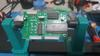
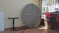
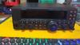
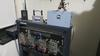
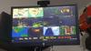
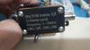
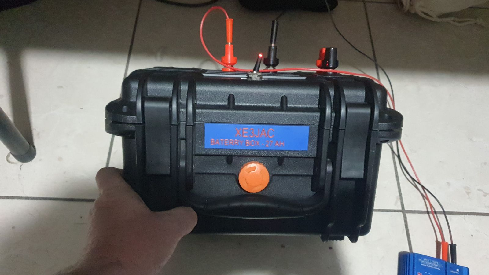
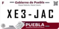
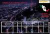
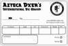
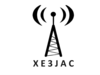
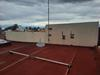
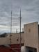
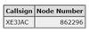
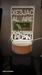
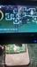
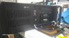
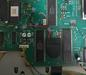
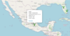
Enlaces
Gracias por tu visita. 73's de XE3JAC.